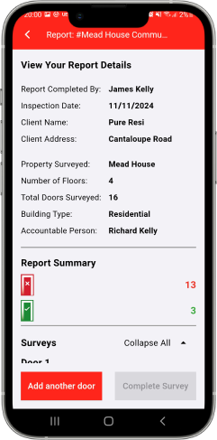
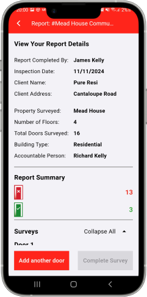

Our Software
Is a cloud-based application that has been developed for everyone involved in Passive Fire Product Manufacture, Installation, Inspection, Management and Maintenance.meet current guidelines and safety regulations, as well as a list of non-critical but advisable improvements.
Making Fire Safety Simple For You
Simplify Fire Safety Management
Simplify fire safety management with our user-friendly platform. Access a dashboard offering an at-a-glance view of all fire door reports for streamlined oversight. Centralize your fire safety data, automate scheduling, and receive real-time reporting to ensure compliance with UK regulations. Effortlessly manage multiple properties, access interactive floor plans, and seamlessly share documentation with your team. Protect your occupants and properties with our cutting-edge fire safety technology that's efficient, accurate, and easy to use.
 

Fire Door Inspections
Compatible with any device, our innovative app enables you to complete and update surveys seamlessly, anytime and anywhere.
Fire Door Inspections
Compatible with any device, our innovative app enables you to complete and update surveys seamlessly, anytime and anywhere.
Fire Door Inspections
Compatible with any device, our innovative app enables you to complete and update surveys seamlessly, anytime and anywhere.
Fire Door Inspections
Compatible with any device, our innovative app enables you to complete and update surveys seamlessly, anytime and anywhere.

No time to talk?
Request a Quote